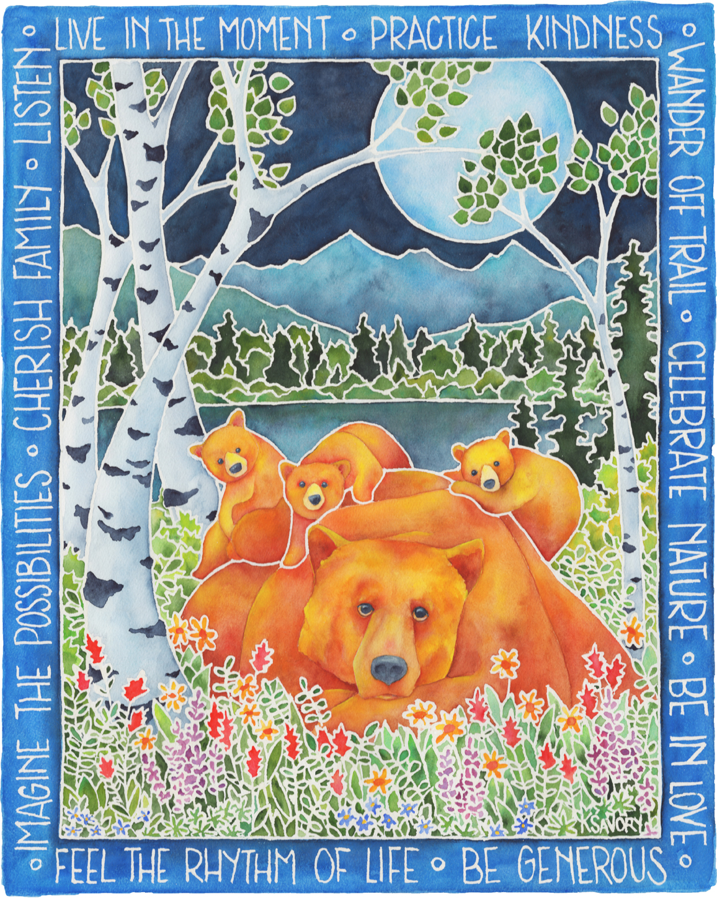

The painting is by an artist named Karen Savory. Shes really good, and I like her art a lot. You can visit her website at www.simplysavory.com. the reason I chose the wolf was because I was in Yellowstone two weeks ago on a father-son camping trip with organized by a teacher at my school. We had an awesome time, and we even saw a wolf pack hunt! If you didnt know, thats super rare. We flew in to Grand Teton National Park and stayed there for a couple nights, went to Yellowstone for two days, (we actually saw more animals in Yellowstone then we did in Grand Teton even though we stayed less days there) went back to Grand Teton for a day, and the trip was over. It was an awesome trip, and I didnt give any details at all here because it would take up way too much space. Thanks for reading!
Wanna go back to the other page?

The bear is most likely 610, a famous bear from Yosemite that happens to have two cubs right now, but I bet she had three at one point (she's pretty old, but don't tell her I said that). This painting is titled "Dear O'l Dad, but I doubt that was the cubs dad, since bear fathers don't usually ever meet their children, and sometimes they even eat them if they see the cubs roaming around :( . Bear mothers are very protective of their cubs, and if you see one don't get very close. She'll probably think that you're going to kill her cubs, and she'll start chasing you like a madman. Just, she's a bear. Don't even try to outrun a bear because they can run up to 40 mph. Yikes. Bears usually want nothing to do with people, though. The bears in this picture are grizzly or brown bears, the rarest bear in Yosemite. Grizzly and black bears are both endangered species, and we should try to preserve their habitat and save this magnificent creature.